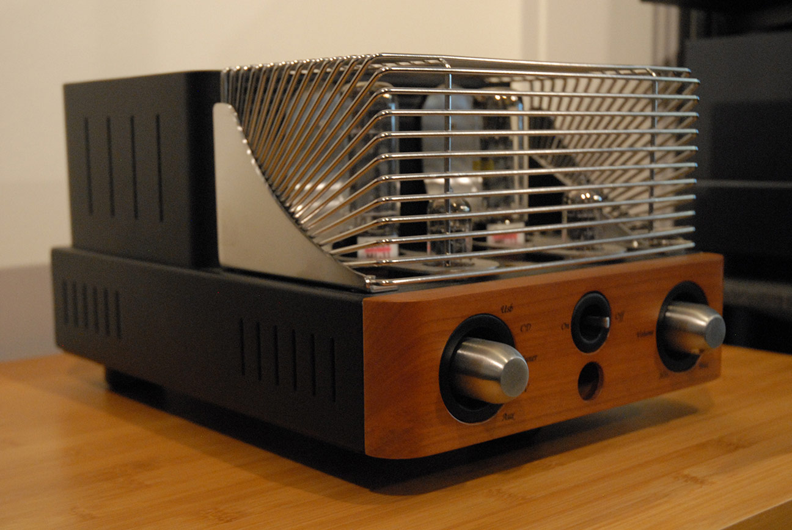
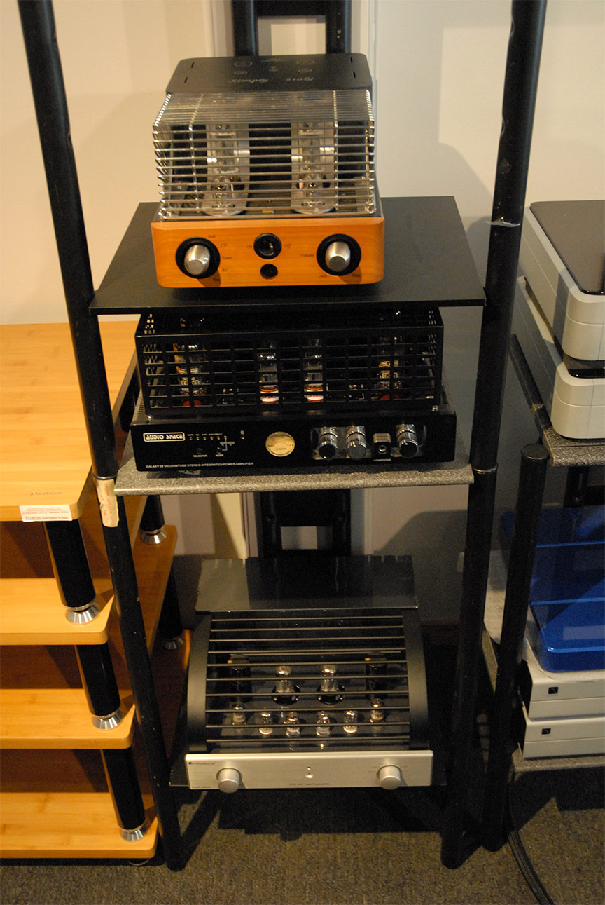

Amplification
Tube Integrated Amplifiers in Ottawa
The glow and warmth of valve amplification, matched to speakers that love it. Hear the character in your favorite recordings.

Buying Guide
What Is a Tube Integrated Amplifier?
A tube integrated amplifier is a valve-based integrated that combines the preamplifier and power amplifier in a single chassis — one component that handles source switching, volume, and the current needed to drive your loudspeakers, using vacuum tubes in its amplification stages. It is prized for a warm, dimensional midrange and a natural sense of ease, and for many Ottawa listeners it is a richly musical route to genuine high-fidelity two-channel sound.
| Model | Type | Power | Price (CAD) |
|---|---|---|---|
| Unison Research Simply Italy | Tube | 12W Class A | $3,499 CAD |
| Unison Research S6 | Tube | 35W Class A | $5,899 CAD |
| Unison Research Sinfonia | Tube | 25W Class A | $7,299 CAD |
Prices and availability shown are subject to change — contact us to confirm current stock.
What Makes Tube Amplification Sound Different?

Tubes sound different because of the way they handle even-order harmonics, which the human ear perceives as musical and pleasing. The result is an organic warmth and three-dimensional holography that breathes life into the midrange, with a sense of air around voices and acoustic instruments. Much of that character comes from the output transformers that couple the glowing valves to your speakers — which is exactly why thoughtful speaker matching matters so much with a tube integrated.
Which Tubes — EL34 or KT88?

The output tube shapes much of an amplifier's voice. The EL34 — at the heart of the Unison Research Simply Italy and S6 — is celebrated for its lush, romantic midrange and singing vocals, while the KT88 in the Sinfonia trades a little of that warmth for greater authority, grip, and headroom. Neither is better in the abstract; the right valve depends on your speakers and the sound you are chasing, which is something an unhurried in-store listen makes obvious.
How Do I Match a Tube Amp to My Speakers?
Match a tube amp to your speakers by their sensitivity and impedance, not by watts alone. Tube integrateds generally pair best with higher-sensitivity loudspeakers — typically 90dB and above — that present a stable, friendly impedance curve, so a modest 12 to 35 watts can fill a room with effortless dynamics. Tell us your speakers and your room, and we will confirm whether they are a natural fit for valve power or steer you to the pairing that sings.
Frequently Asked Questions
Expert guidance on choosing the right tube integrated amplifier for your system.
What is a tube integrated amplifier? expand_more
A tube integrated amplifier is a valve-based integrated that combines a preamplifier and a power amplifier in a single chassis, using vacuum tubes in its amplification stages. It handles source switching, volume, and the current needed to drive your loudspeakers, and is prized for a warm, dimensional midrange. It is one component that delivers genuine high-fidelity two-channel sound with the character that only valves provide.
Do the tubes need replacing, and how often? expand_more
Yes, vacuum tubes are consumable items with a finite lifespan, typically ranging from 2,000 to 5,000 hours depending on usage and design. Replacing them (re-tubing) and occasionally adjusting the bias are part of the ownership experience, much like maintaining a classic car. We can advise on re-tubing intervals and handle bias adjustment for you.
Should I choose a tube or a solid-state integrated amplifier? expand_more
Solid-state amplifiers generally offer higher power output, tighter bass control, and lower distortion specs. Tube amps excel in midrange purity, spatial imaging, and subjective musicality. The right choice is subjective and depends on your listening preferences, your speakers, and your associated equipment, which is why we encourage a side-by-side audition.
Will a tube integrated have enough power for my speakers? expand_more
It depends entirely on your speakers' sensitivity (measured in dB) and impedance curve. Tube amplifiers generally pair best with higher sensitivity speakers (typically 90dB and above) with stable impedance characteristics. Our tube integrateds range from 12 to 35 watts, and we can help you determine whether your current speakers are a good match.
How long does a tube integrated amplifier last? expand_more
A well-built tube integrated lasts indefinitely with periodic tube replacement and occasional capacitor refresh. The chassis, transformers, and circuitry endure for decades, while the valves themselves are serviced as they age. Buying once and keeping it for years is part of why a quality tube integrated is such a sound investment.
Can I audition tube integrated amplifiers in Ottawa before buying? expand_more
Yes. Distinctive Audio offers in-store listening demos in Ottawa so you can hear a tube integrated amplifier with your choice of speakers and sources before you commit. Book a listening demo and we will set up a comparison matched to how you actually listen.